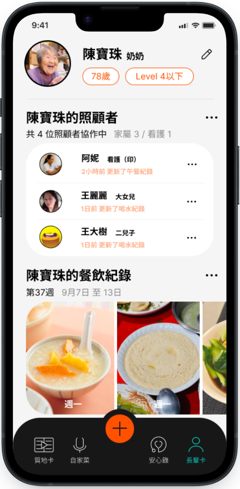
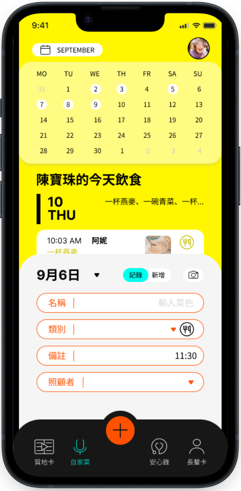

臺灣科技大學｜設計系
臺北醫學大學營養學院 保健營養學系｜高齡營養研究中心 共同出品
你安心餵，
我安心呷
專為吞嚥困難長輩家庭設計的照護 APP。
把語言治療師、營養師的質地建議，變成家裡做得到的每一餐。


照護現場的難題
診間聽懂了，回到家卻不知道怎麼做
吞嚥困難的飲食建議專業又細節多。研究發現，家庭照顧者最常卡在這三件事：
01
食物質地調整
稠度到底有沒有達標？增稠劑比例只能靠感覺。
02
醫囑容易遺忘
看診時的建議等級與注意事項，回家後記不清楚。
03
多人照顧不一致
家屬、看護輪流餵食，彼此不確定長輩今天吃了什麼。
四大功能
一個 APP，陪全家安心吃好每一餐
質地卡
在家也能正確判斷食物質地
依照 IDDSI 國際吞嚥飲食標準，提供質地測定示範影片，一步步學會居家檢測方法；還能依等級查詢咀嚼困難飲食的示範料理。
自家菜
每一餐吃了什麼，拍照就記下
用行事曆檢視長輩的每日飲食，記錄菜色、類別、時間與負責餵食的照顧者，回診時就有完整紀錄可以參考。


安心錄
醫師與治療師的建議，不再只靠記憶
記錄每次看診的日期、院所、醫師與建議質地等級，支援語音輸入。下次複診前打開，上次的醫囑一目了然。
長輩卡
家屬、看護、醫療人士一起照顧，資訊同步
長輩的年齡與適用質地等級清楚標示，多位照顧者與醫療工作者共同協作，隨時看到誰更新了餐飲或喝水紀錄，也方便語言治療師、營養師在診間每週的餐飲回顧。
使用流程
從診間到餐桌，四個步驟
-
STEP 1
治療師評估吞嚥功能
在醫院或診所評估後，建議適合的質地等級。
-
STEP 2
存進安心錄
掃描衛教單上的 QR Code 下載，當場記下醫囑。
-
STEP 3
照著質地卡備餐
看影片自測稠度，餐後用自家菜拍照記錄。
-
STEP 4
帶著長輩卡回診
治療師參考居家飲食紀錄，調整下一階段建議。
[60 秒 APP 操作示範影片]
醫療院所合作專區
讓您的吞嚥衛教，延伸到病人家裡
誠摯邀請醫院復健科、語言治療與營養團隊，以及語言治療診所一同推廣安心呷。
語言治療師
減少重複衛教時間，回診時看得到居家執行狀況。
護理與營養團隊
以 IDDSI 為共同語言，出院準備銜接更順暢。
病人與家屬
回家後有依據可循，照顧更有信心。
院所經營
提升照護品質形象，強化社區與長照連結。
方案 A
衛教共推
提供安心呷 QR Code 衛教單與海報，於衛教時轉介家屬下載。
[費用說明]
方案 B｜推薦
三個月試辦
選定病房或門診試用，期末提供使用數據與照護知能成效報告。
[費用說明]
方案 C
院所客製合作
依院所需求規劃客製衛教內容與共同研究。
[費用說明]
專業把關
學術研究團隊出品，內容有依據
臺北醫學大學出品
由營養學院保健營養學系與高齡營養研究中心開發。
依循 IDDSI 國際標準
質地分級與測定方法，與醫療端使用同一套語言。
專業審閱團隊
[審閱的語言治療師、營養師姓名與職稱]
合作院所
「[語言治療師的使用心得]」
— [姓名]，[院所] 語言治療師
「[家屬或看護的使用心得]」
— [稱呼]，家屬
常見問題
還有疑問嗎？
安心呷需要付費嗎？
[請填寫收費方式，例如：家屬版免費下載使用]
支援哪些手機？
[請填寫支援的系統版本，例如：iOS 與 Android]
一定要由醫院轉介才能使用嗎？
[請填寫，例如：不需要，家屬可直接下載；院所轉介可獲得衛教單與使用說明]
長輩的飲食與看診資料安全嗎？
[請填寫資料儲存與個資保護方式，並連結隱私權政策]
可以邀請看護或其他家人一起使用嗎？
可以。在長輩卡中邀請其他照顧者，家屬與看護即可共同記錄與查看餐飲紀錄。
APP 可以取代語言治療師的評估嗎？
不行。安心呷是協助家屬執行專業建議的工具，質地等級仍應由醫師或語言治療師評估後建議。
手機掃描下載